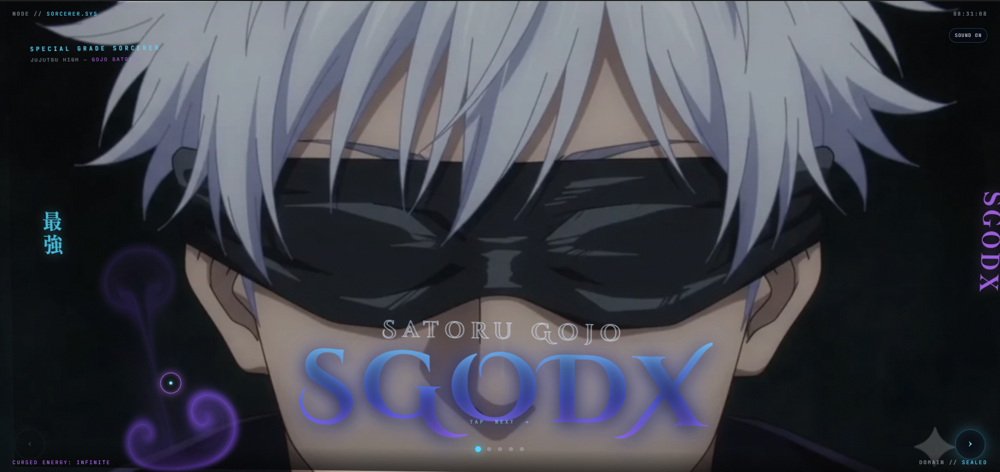

Cinematic entry
A branded preloader leads into coordinated scene-entry animation, with a fallback path if the motion library is unavailable.
Creative frontend / case study 01
A cinematic, interactive fan experience shaped around Satoru Gojo. Five scenes, motion-led transitions, and a responsive visual system.

Owner-approved Gojo/SGODX cover - other captures withheld pending media clearance
The experience
A fan experience presented as a sequence, with scene navigation and a carefully layered motion language. The production experience is hosted separately on Vercel.
A branded preloader leads into coordinated scene-entry animation, with a fallback path if the motion library is unavailable.
Next, previous, and direct scene controls keep the five-scene experience navigable across desktop and touch layouts.
A Six Eyes pointer treatment and interactive Limitless and Six Eyes cards add responsive visual feedback.
Creative engineering
The production experience combines direct browser APIs with a focused motion dependency. This case study page remains dependency-free.
Responsive layout and scene interactions use browser-native foundations.
Timeline-driven transitions and realtime pointer visuals are part of the deployed experience.
Optimized image and silent video variants, with browser tests in the private source project.
Visual preview
Credits & scope
Satoru Gojo and Jujutsu Kaisen belong to their respective rights holders. This project is unofficial and is not affiliated with, sponsored by, or endorsed by them. The live experience adapts a pre-existing HTML base whose author, source repository, and redistribution terms remain unverified. SGODX's customizations are presented transparently; no claim is made to own the inherited base or third-party media. The production implementation and uncleared media are not included here. Read the full notice.
Created and customized for the SGODX portfolio by David Castro / dpsychoo.